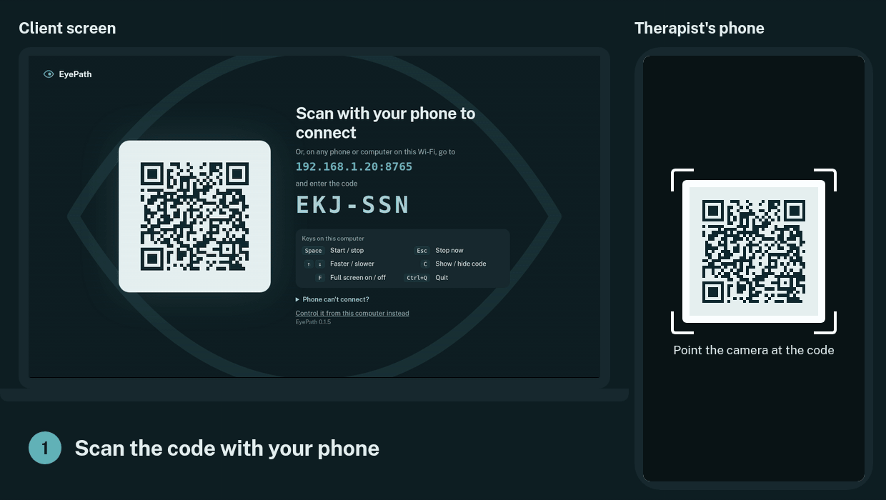
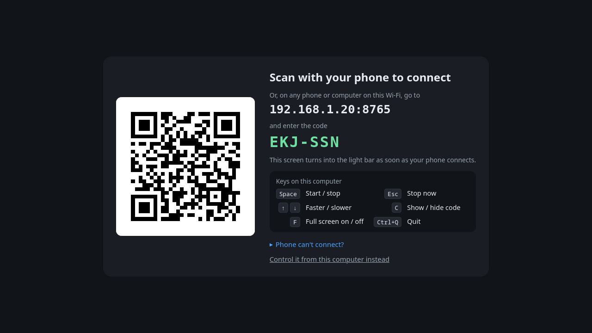
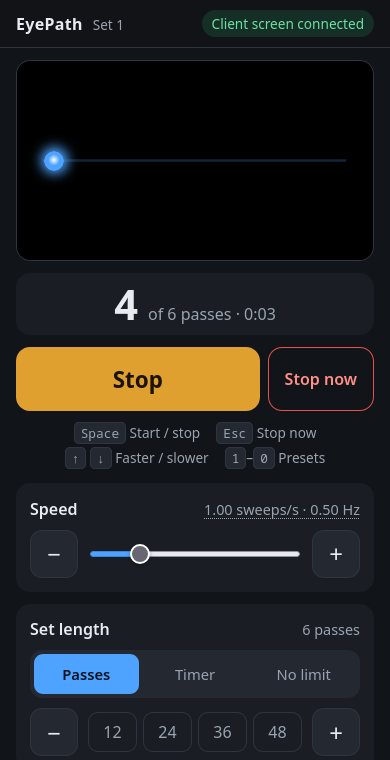
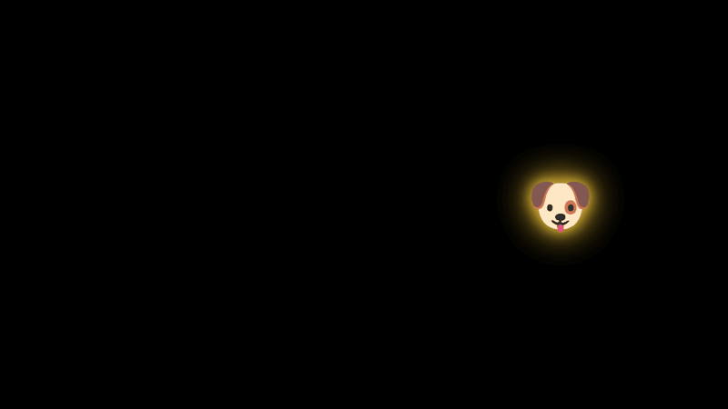
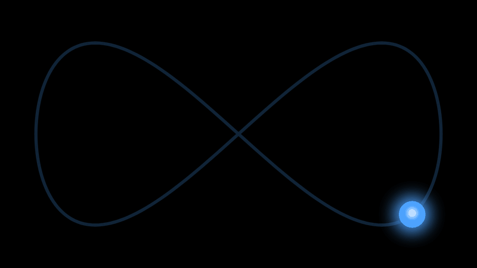
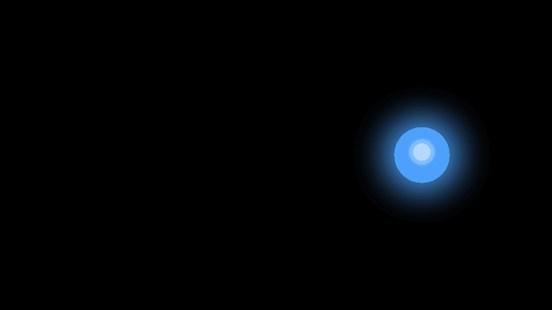

A free EMDR light bar on the computer you already have
The client watches a smoothly moving light, with bilateral sound in headphones. You control it from your phone. No accounts and no subscription.
Free and open source (MIT) · Windows and Mac (Apple Silicon and Intel)

How it works
Install EyePath on the computer the client will watch: a laptop, or a computer connected to a TV or second screen. Your phone needs nothing installed; it's the remote.
Open EyePath
It fills the screen with a QR code and a short code. A new code is made every time it opens.
Scan with your phone
Or type the address and code into any browser on the same Wi-Fi. The screen turns into the light bar.
Run your sets
Start, stop, speed, track, colour and sound, all from the phone. Sets end cleanly with the light gliding home.


Made for the therapy room
A light bar's essentials, plus things that are hard to get from hardware.
Fun shapes instead of the light
Ten friendly pictures (a dog, cat, butterfly, fish, turtle, unicorn, rocket, gold star, rainbow and ball) can follow the track in place of the light. Animals turn to face the way they're moving, and the colour setting tints their glow.
Pick one with a tap on the phone, even mid-session.

Eight tracks, three ways to move
Side to side, up and down, both diagonals, and a figure 8 or oval in either direction. The light can glide (slowing at each side), move at a steady pace, or jump from side to side. Raise or lower it on the screen, and change its size, colour and background.

Dual attention
Colour flashes, numbers or letters appear on the light at random moments, at easy, medium or hard. The client counts or says them aloud, and the answers show on your phone so you can check.

Smooth and in sync
Every screen works out the light's position from a shared clock, so a busy Wi-Fi doesn't make it stutter, and each tone plays as the light reaches the side.
Bilateral sound
A click or tone on each side, or a sweep that follows the light. A left/right test, a balance control, and a delay setting for Bluetooth headphones.
Sets that end cleanly
Choose a number of passes or a timer. Stop finishes the current sweep, then the light glides back to the centre.
Speed in Hz
Shown in sweeps per second and Hz. Change speed mid-set without the light jumping.
Presets per client
Save the settings that work for a client, including their sound delay and balance.
Keys on the computer
No phone nearby? Press Space to start or stop, the arrow keys to change speed, or S to move the light to another screen.
EyePath runs entirely on your computer and your local Wi-Fi
No accounts, no internet needed
There's nothing to sign up for and no cloud service. It works on a Wi-Fi with no internet, or on your phone's hotspot.
Nothing about clients is stored
Only your settings and the presets you save. No session logs, no recordings, no analytics.
A new code every session
Only a phone that scans the QR code or types the code can control it, and nothing stays connected after the app closes.
Open source
The code is public under the MIT licence, so anyone can check what it does. This website has no cookies or trackers either.
First-time setup
EyePath isn't signed by Apple or Microsoft yet, so both show a warning the first time.
Windows says "Windows protected your PC"
Mac says it can't check the app
My phone can't connect
- iPhone with Chrome, Firefox, Edge or Brave: open Settings → Privacy & Security → Local Network and turn it on for that browser. Safari doesn't need this.
- Check the phone is on the same Wi-Fi as the computer, and turn off mobile data to be sure.
- Turn off any VPN or ad-blocking app on the phone.
- Make sure the computer's firewall allows EyePath. The app's QR screen has steps for your system.
- Clinic or guest Wi-Fi often stops devices reaching each other. Turn on your phone's hotspot and join the computer to it.
Can I use it without the phone?
Which headphones?
Research behind the settings
- Speed. The default is 1 Hz (two sweeps a second). In lab studies, 1.2 Hz eye movements worked better than 0.8 Hz (van Veen et al., 2015).
- Jump movement. Horizontal saccades (quick jumps) improved memory retrieval in lab studies by Christman and colleagues.
- Dual attention. Extra working-memory load can strengthen the effect of the eye movements, with harder tasks working better (Littel & van Schie, 2019). EMDR 2.0, which adds such tasks, did as well as standard EMDR with fewer sets in a non-clinical trial (Matthijssen et al., 2021).